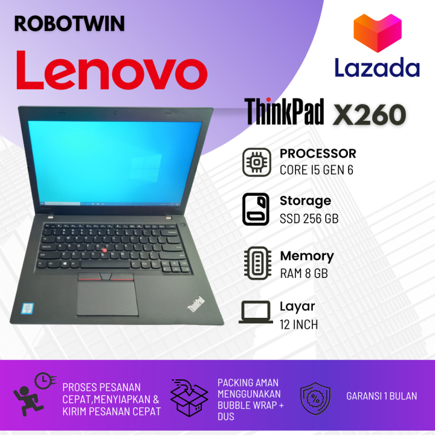
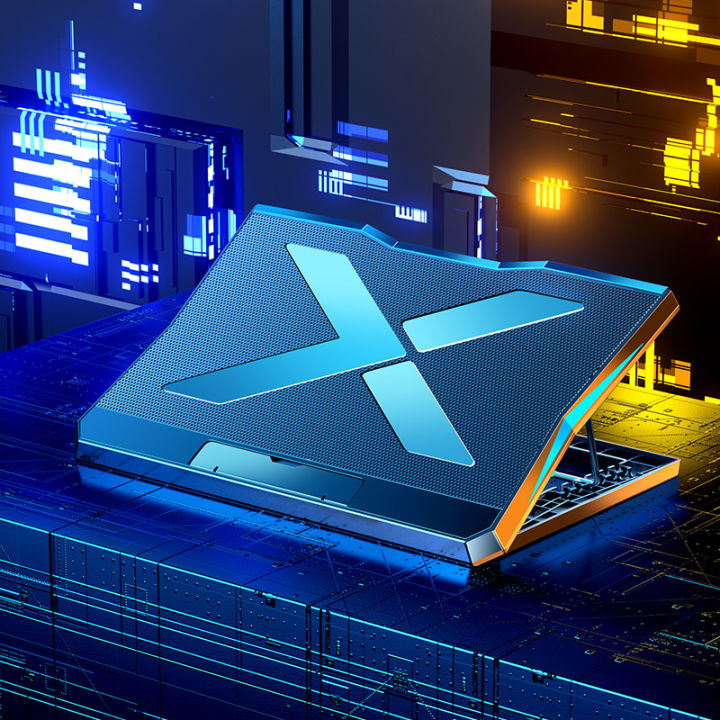

Beberapa produk yang ada di lazada

| "lenovo"ThinkPad X260 adalah laptop kompak dan bertenaga yang dirancang untuk profesional dan pengguna yang membutuhkan performa yang handal dalam ukuran yang portabel. Memiliki ukuran layar 12.5 inci, menjadikannya mudah dibawa kemana saja tanpa mengorbankan fungsionalitas. Ditenagai oleh prosesor Intel Core generasi ke-6, menawarkan kinerja yang cukup untuk multitasking dan aplikasi bisnis. Biasanya dilengkapi dengan RAM 4GB atau 8GB dan opsi penyimpanan SSD hingga 512GB, memastikan kecepatan akses data yang cepat dan responsif. Dirancang untuk daya tahan baterai yang baik, memungkinkan penggunaan sepanjang hari tanpa sering mengisi daya. Dengan reputasi ThinkPad untuk ketahanan dan performa, X260 adalah pilihan yang solid untuk kebutuhan bisnis dan penggunaan sehari-hari. |

| "Colling Pad"Cooling Pad Laptop adalah perangkat tambahan yang dirancang untuk membantu mendinginkan laptop dan mencegah overheating. Ini penting karena suhu yang terlalu tinggi dapat menyebabkan penurunan performa laptop, kerusakan komponen internal, dan memperpendek umur perangkat. Biasanya terbuat dari bahan yang ringan dan tahan lama seperti plastik, logam, atau kombinasi keduanya. Beberapa model juga menggunakan mesh (jaring) logam untuk meningkatkan aliran udara. Banyak cooling pad dilengkapi dengan satu atau beberapa kipas internal yang berfungsi untuk meningkatkan sirkulasi udara di bawah laptop. Kipas ini dapat memiliki berbagai ukuran dan kecepatan, bergantung pada model. Cooling pad tersedia dalam berbagai ukuran untuk kompatibilitas dengan berbagai ukuran laptop, dari model kecil hingga laptop gaming besar. |